Growing gutters
Elevated gutters for strawberries and vegetables, and everything that holds them up.
Profiles
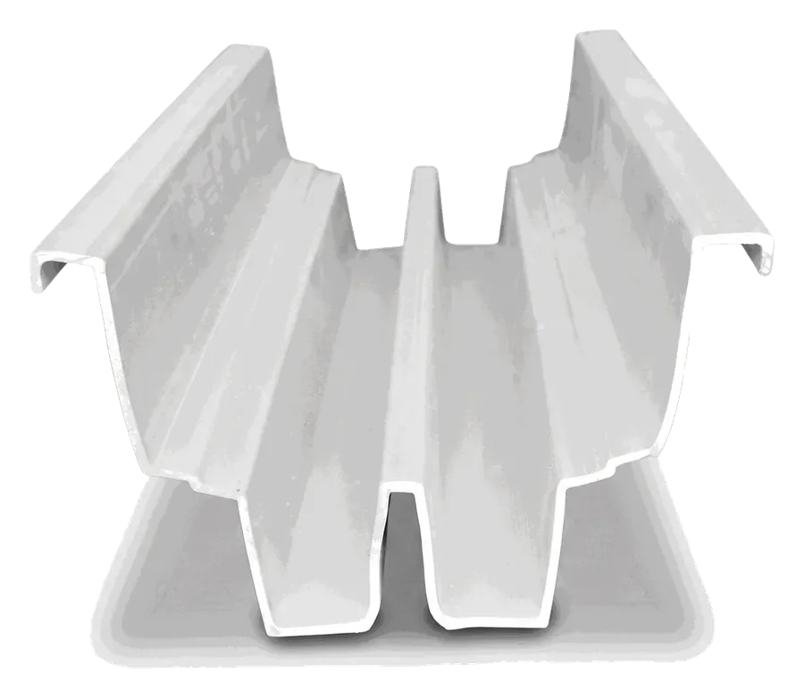
Strawberry gutter
Twin-channel, with a central drain channel and a raised lip.
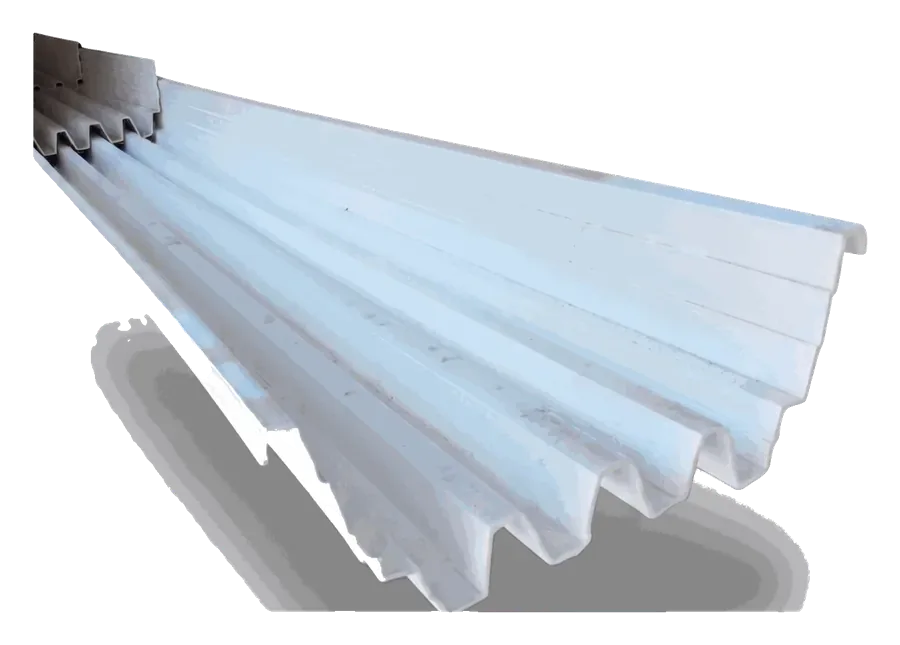
Vegetable gutter
Multi-channel, with drain channels along its length.
Hangers & connectors
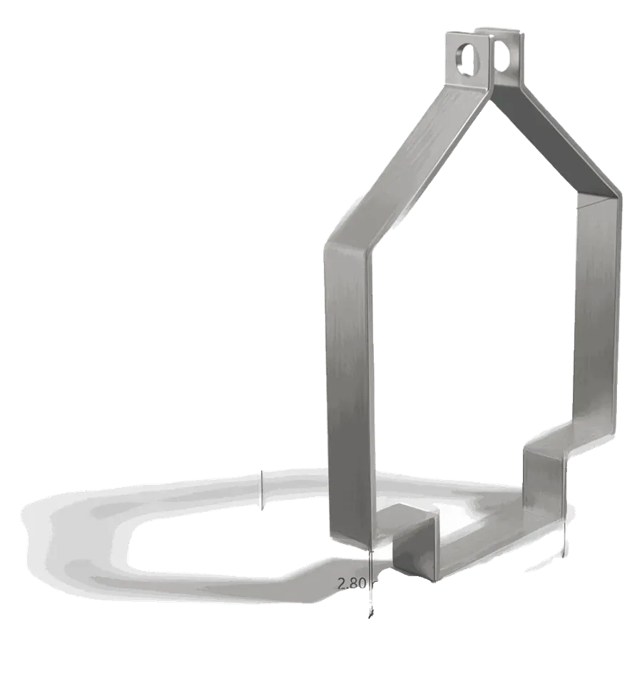
Gutter holder
Bent sheet metal, two hanging points.
15 cm tall8.6 cm opening
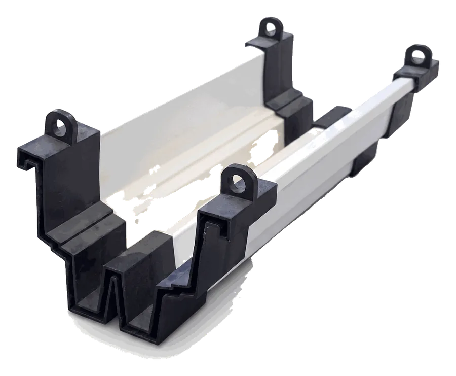
Strawberry gutter connector
Locks onto the profile, with a hanging point.
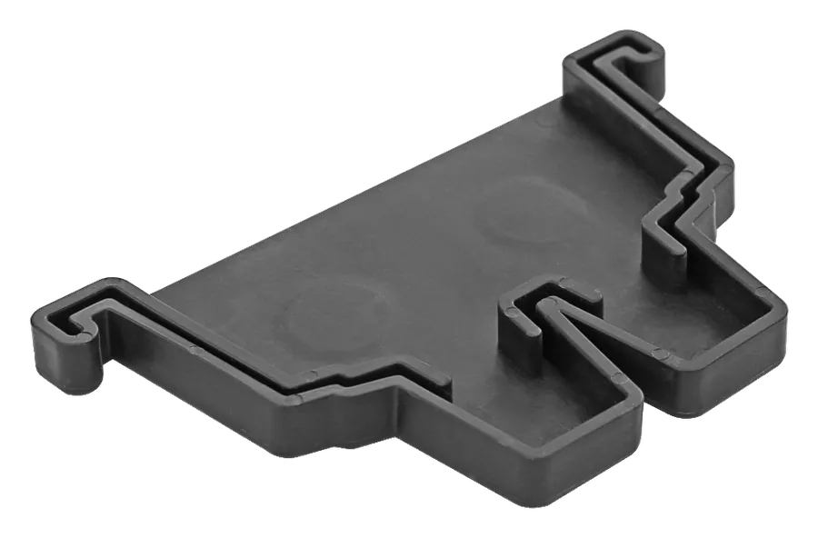
End closure
Double lock and a drain outlet.
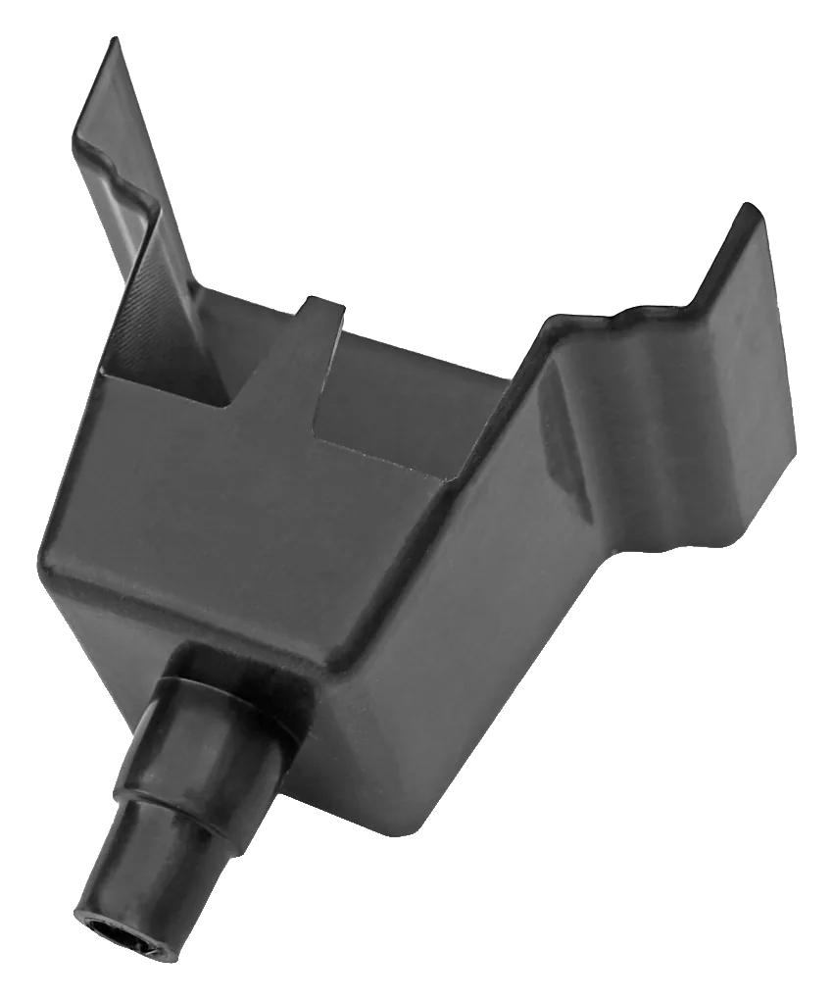
Drain unit
Collects drainage at the gutter end.
16 or 20 mm outlet
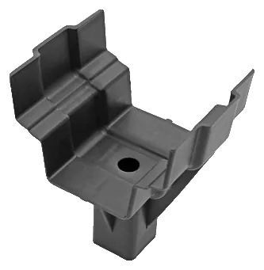
Support saddle
Fixes the gutter to the top of the leg.
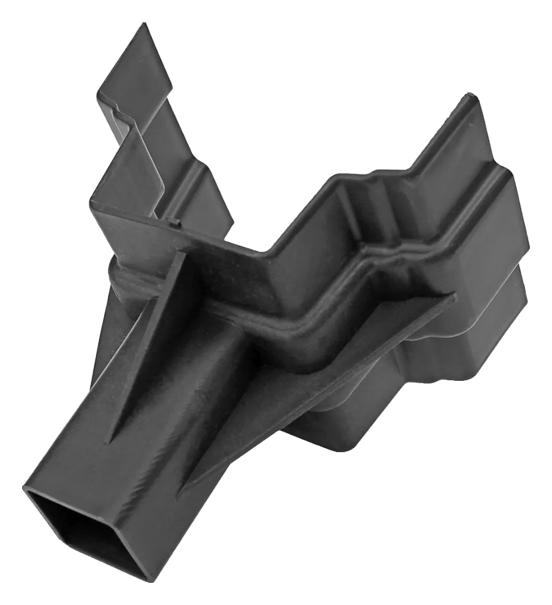
Hanger bracket
Joins the gutter to a leg or a hanger.
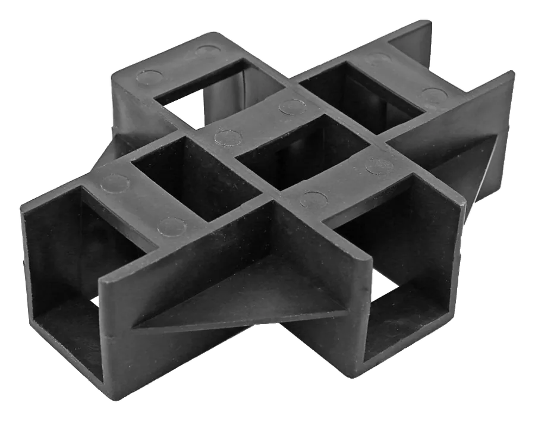
Corner joint
Changes direction at the end of the row.
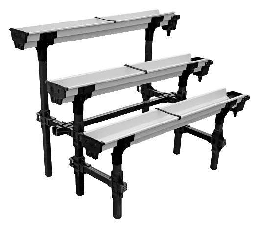
Stepped stand
Rows at different heights.
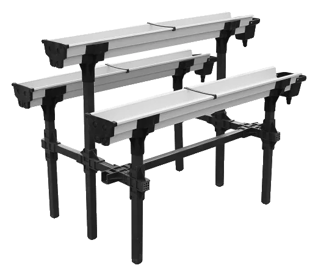
Combined stand
Two rows on one stand.